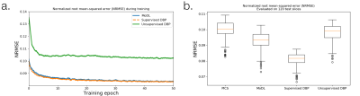
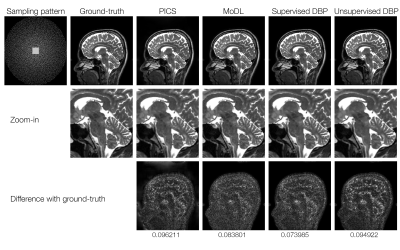
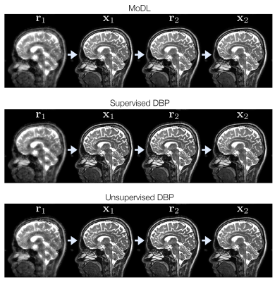

0660
Unsupervised Deep Basis Pursuit: Learning Reconstruction without Ground-Truth Data1Electrical Engineering and Computer Sciences, University of California, Berkeley, Berkeley, CA, United States, 2International Computer Science Institute, Berkeley, CA, United States
Synopsis
Basis pursuit is a compressed sensing optimization in which the l1-norm is minimized subject to model error constraints. Here we use a deep neural network prior instead of l1-regularization. Using known noise statistics, we jointly learn the prior and reconstruct images without access to ground-truth data. During training, we use alternating minimization across an unrolled iterative network and jointly solve for the neural network weights and training set image reconstructions. At inference, we fix the weights and pass the measurements through the network. We compare reconstruction performance between unsupervised and supervised (i.e. with ground-truth) methods. We hypothesize this technique could be used to learn reconstruction when ground-truth data are unavailable, such as in high-resolution dynamic MRI.
Introduction
Deep learning in tandem with iterative optimization$$$^{1-4}$$$ has shown great promise at reconstructing accelerated MRI scans beyond the capabilities of compressed sensing (CS)$$$^5$$$. Deep learning image reconstruction pipelines typically require hundreds to thousands of examples for training. The training data usually consist of pairs of under-sampled k-space and the desired ground-truth image. The reconstruction is then trained in an end-to-end fashion, in which under-sampled data are reconstructed with the network and compared to the ground-truth result. In many cases, collecting a large set of fully sampled data for training is expensive, impractical, or impossible.
In this work, we present an approach to model-based deep learning without access to ground-truth data$$$^{6-8}$$$. We take advantage of (known) noise statistics for each training example and formulate the problem as an extension of basis pursuit denoising$$$^{9}$$$ with a deep convolutional neural network (CNN) prior in place of image sparsity. During training, we jointly solve for the CNN weights and the reconstructed training set images. At inference time, we fix the weights and pass the measured data through the network.
We compare the Deep Basis Pursuit (DBP) formulation with and without supervised learning, as well as to MoDL$$$^4$$$, a recently proposed unrolled iterative network that uses ground-truth data for training. We show that in the unsupervised setting, we are able to approach the image reconstruction quality of supervised learning, thus opening the door to applications where collecting fully sampled data is not possible.
Theory
Basis pursuit denoising formulates the CS reconstruction as an l1-minimization subject to a data consistency constraint dependent on the noise level$$$^9$$$. Here, we replace the l1-norm with an l2-norm incorporating a CNN$$$^{2,4}$$$. The DBP optimization is given by$$\min_{\mathbf{x,w}}\frac{1}{2}||\mathcal{N}_\mathbf{w}(x)||_2^2\quad\text{subject to }||\mathbf{y}-\mathbf{Ax}||_2\le\epsilon,$$ where $$$\mathbf{x}$$$ is the unknown image, $$$\mathbf{A}$$$ is the forward model incorporating coil sensitivities$$$^{10}$$$ and sampling, $$$\mathbf{y}$$$ are the measured k-space samples, $$$\epsilon=\sigma\sqrt{n}$$$, $$$n$$$ is the number of acquired samples, and $$$\sigma$$$ is the noise standard deviation. $$$\mathcal{N}_\mathbf{w}(\mathbf{x})=\mathbf{x}-\mathcal{R}_\mathbf{w}(\mathbf{x})$$$ is a CNN parameterized by weights $$$\mathbf{w}$$$ that aims to estimate noise and aliasing$$$^{2,4}$$$. To handle the joint optimization, we consider an alternating minimization$$$^{4}$$$, repeated $$$N_1$$$ times:$$\begin{align}(1)\quad\;\mathbf{r}&=\mathcal{R}_\mathbf{w}(\mathbf{x})\\(2)\quad\;\mathbf{x}&=\arg\min_{\mathbf{x}}\frac{1}{2}||\mathbf{x}-\mathbf{r}||_2^2\quad\text{subject to }||\mathbf{y}-\mathbf{Ax}||_2\le\epsilon.\end{align}$$Subproblem (2) can be solved with the following ADMM$$$^{11}$$$ update steps, repeated $$$N_2$$$ times:$$\begin{align}(\text{2a})\quad\;&\left(\rho\mathbf{A}^*\mathbf{A}+\mathbf{I}\right)\mathbf{x}=\rho\mathbf{A}^*(\mathbf{z}-\mathbf{u})+\mathbf{r}\\(\text{2b})\quad\;&\mathbf{z}=\mathbf{y}+\text{L2Proj}(\mathbf{Ax}+\mathbf{u}-\mathbf{y},\epsilon)\\(\text{2c})\quad\;&\mathbf{u}=\mathbf{u}+\mathbf{Ax}-\mathbf{z}.\end{align}$$When both input $$$\{\mathbf{y}^{(i)},\mathbf{A}^{(i)},\epsilon^{(i)}\}_{i=1}^N$$$ and ground-truth $$$\{\mathbf{x}^{(i)}\}_{i=1}^N$$$ training data are available, the network weights can be trained in a traditional end-to-end fashion. When ground-truth data are not available, we perform an additional alternating minimization across $$$\{\mathbf{x}^{(i)}\}$$$ and $$$\mathbf{w}$$$. For the $$$k^\text{th}$$$ training iteration, we hold $$$\mathbf{w}_{k-1}$$$ fixed and update each $$$\mathbf{x}_k^{(i)}$$$ through a forward pass of the network. We then update $$$\mathbf{w}_k$$$ through end-to-end training, using the $$$\{\mathbf{x}_k^{(i)}\}$$$ as surrogates for the ground-truth data.Methods
DBP was implemented in PyTorch using separate channels for real and imaginary components. Figure 1 shows the unrolled network architecture and parameters. The CNN used a ResNet architecture$$$^{12}$$$ with four residual connection blocks. Data were taken from the authors of MoDL$$$^{13}$$$, containing T2-weighted brain slices of five volunteers with 12 coils and matrix size 256x232. The first four volunteers were used for training (330 training, 30 validation slices) and 120 central slices from the fifth volunteer were used for testing. A different variable-density Poisson-disc sampling pattern$$$^{5,14}$$$ was pre-generated for each slice with 24x24 calibration, elliptical sampling, and acceleration factor $$$R\approx 6$$$. Complex-valued Gaussian noise with standard deviation $$$\sigma=0.01$$$ was added in k-space. For comparison, MoDL was also implemented using the same unrolled parameters and CNN architecture. DBP was separately trained with and without ground-truth data. Normalized root mean-squared error (NRMSE) was used for evaluation. The results were also compared to a parallel imaging and CS (PICS) reconstruction using BART$$$^{14,15}$$$, with l1-wavelet regularization parameter optimized over the validation set.Results and Discussion
Figure 2 shows the training loss curves and box plots of testing error, indicating a small performance gap between supervised and unsupervised learning. The lowest NRMSE was achieved with supervised DBP, followed by MoDL, unsupervised DBP, and PICS. Figure 3 compares reconstructions on a slice from the test set. Figure 4 shows some of the intermediate output stages for the three networks indicating that similar structure is learned in both CNNs; however, the unsupervised DBP appears to amplify noise-like features in the CNN stage.
There are strong connections to iterative optimization and unrolled deep learning networks$$$^{8,16,17}$$$. Jointly optimizing over the images and weights can be seen as a non-linear extension to dictionary learning. Nonetheless, there is a cost in reconstruction error when moving to unsupervised learning, highlighting the importance of a large training data set$$$^{18}$$$. Fortunately, in many practical settings there is an abundance of under-sampled data available for training.
Conclusion
The combination of basis pursuit denoising and deep learning can take advantage of under-sampled data without access to ground-truth images.Acknowledgements
We thank Frank Ong for valuable discussions. We also thank the following funding sources: National Institutes of Health (NIH) grants R01EB009690, P41RR09784; Sloan Research Fellowship; Bakar Fellowship; GE Healthcare.References
- S Diamond, V Sitzmann, F Heide, and G Wetzstein. “Unrolled Optimization with Deep Priors,” in arXiv:1705.08041, 2017.
- J Schlemper, J Caballero, JV Hajnal, A Price, and D Rueckert. “A Deep Cascade of Convolutional Neural Networks for MR Image Reconstruction,” in Information Processing in Medical Imaging, 2017, pp. 647–658.
- K Hammernik, T Klatzer, E Kobler, MP Recht, DK Sodickson, T Pock, and F Knoll. “Learning a Variational Network for Reconstruction of Accelerated MRI Data,” Magnetic resonance in Medicine, vol. 79, no. 6, pp. 3055–3071, 2017.
- HK Aggarwal, MP Mani and M Jacob. "MoDL: Model Based Deep Learning Architecture for Inverse Problems," in IEEE Transactions on Medical Imaging. doi: 10.1109/TMI.2018.2865356.
- M Lustig, D Donoho, and JM Pauly. "Sparse MRI: The Application of Compressed Sensing for Rapid MR Imaging." Magnetic resonance in medicine 58, no. 6 (2007): doi:10.1002/mrm.21391.
- D Ulyanov, A Vedaldi, and V Lempitsky. “Deep image prior,” in arXiv:1711.10925, 2017.
- J Lehtinen, J Munkberg, J Hasselgren, S Laine, T Karras, M Aittala, and T Aila. “Noise2Noise: Learning Image Restoration without Clean Data,” in arXiv:1705.08041, 2018.
- F Ong and M Lustig. “k-space Aware Convolutional Sparse Coding: Learning from Undersampled k-space Datasets for Reconstruction,” in Proc ISMRM 2018, Paris.
- S Chen, D Donoho. “Basis Pursuit,” Technical Report, Department of Statistics, Stanford University.
- KP Pruessmann, M Weiger, MB Scheidegger, and P Boesiger. "SENSE: Sensitivity Encoding for Fast MRI," Magnetic resonance in medicine 42(5):952-62, 1999.
- S Boyd, N Parikh, E Chu, B Peleato, J Eckstein. "Distributed Optimization and Statistical Learning Via the Alternating Direction Method of Multipliers," Foundations and Trends in Machine Learning 3(1):1-122, 2011.
- K He, X Zhang, S Ren, and J Sun. “Deep Residual Learning for Image Recognition,” in IEEE Conference on Computer Vision and Pattern Recognition 2016, pp. 770–778.
- Downloaded from https://github.com/hkaggarwal/modl
- M Uecker, JI Tamir; F Ong; C Holme, and M Lustig, BART: version 0.4. doi:10.5281/zenodo.817472.
- M Uecker, F Ong, JI Tamir, D Bahri, P Virtue, JY Cheng, T Zhang, M Lustig. “Berkeley Advanced Reconstruction Toolbox”, In Proc ISMRM 2015, Toronto.
- J Sulam, V Papayan, Y Romano, and M Elad. “Multilayer Convolutional Sparse Modeling: Pursuit and Dictionary Learning,” in IEEE Trans Signal Processing 66(15):4090-4104, 2018.
- V Papayan, Y Romano, and M Elad. “Convolutional Neural Networks Analyzed via Convolutional Sparse Coding,” Journal of Machine Learning Research 18, 2017.
- DV Veen, A Jalal, E Price, S Vishwanath, AG Dimakis, “Compressed Sensing with Deep Image Prior and Learned Regularization,” in arXiv:1806.06438, 2018.
Figures



